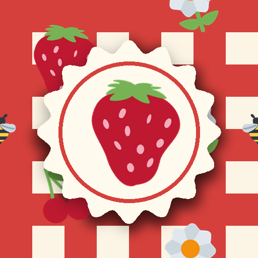

<- all projects

Pattern Picnic
PC
Volume
Live
Design the patterns. Dress the cafe.
Aunt Bea's park cafe, The Picnic Basket, has one summer left on its lease, along with good teapots, a famous cake and terrible tablecloths. You design patterns for a living. Take each order, place motifs on a small seamless tile, pick a base, colours and a repeat style, and watch the tablecloths, cups, bunting and parasol of the 3D cafe wear your design as you work. Win back the regulars from the chain cafe across the park and take the Summer Fair. 60 orders over five seasons, 126 motifs, 12 things to dress and 30 regulars with their own tastes.